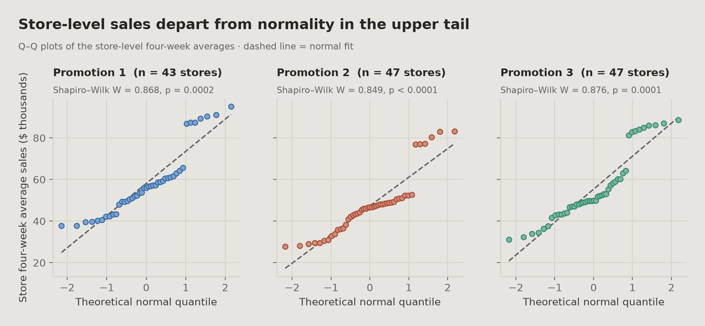
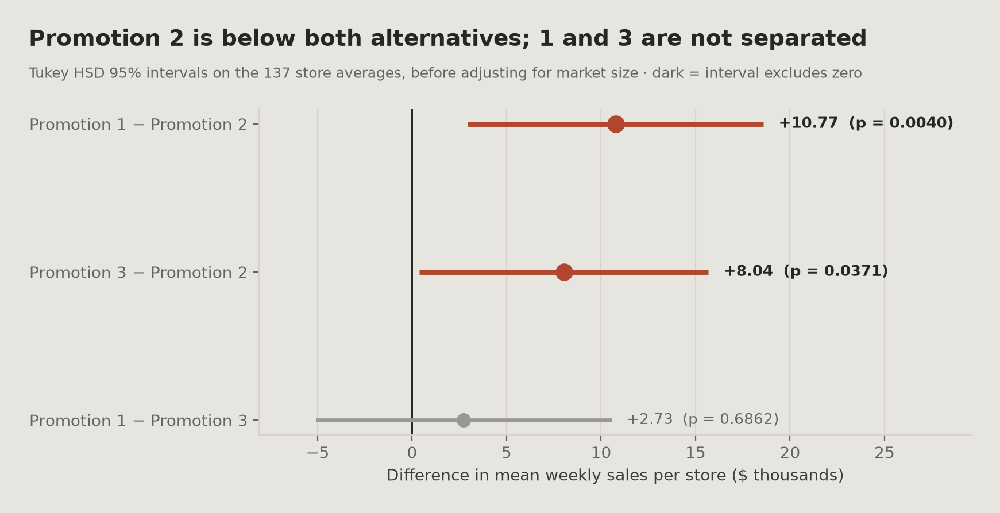
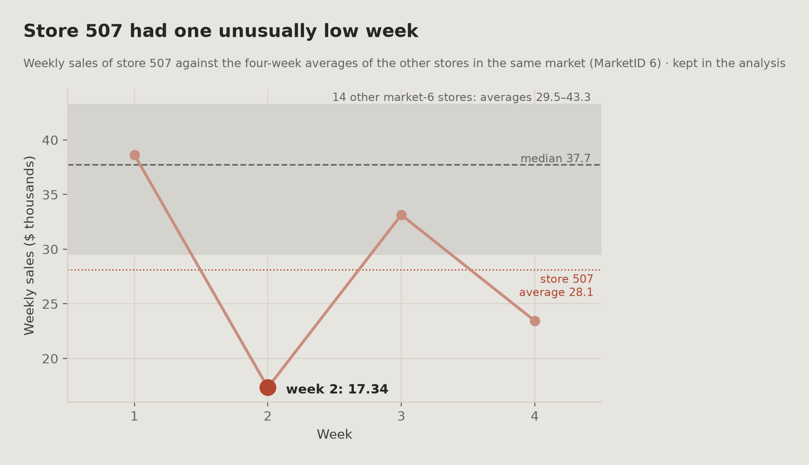
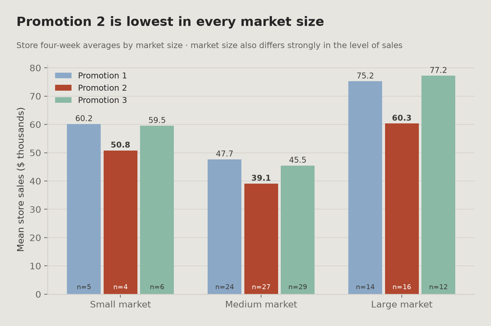
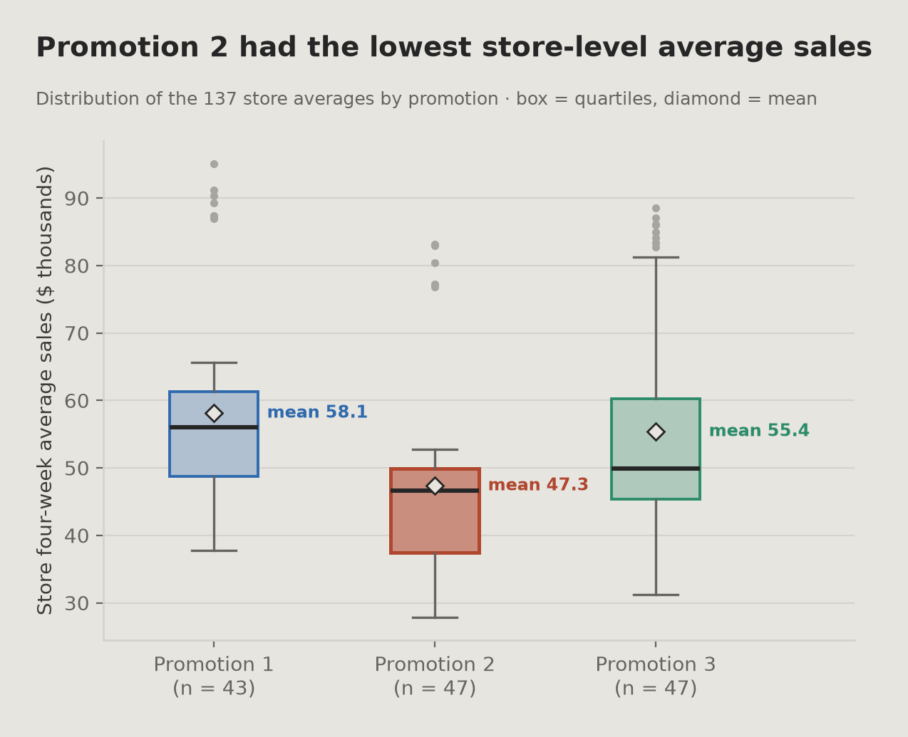

01
개요
비교의 배경과 범위
데이터는 한 체인이 신메뉴를 추가하면서 가능한 프로모션 세 가지를 비교하는 시나리오를 설명합니다. 데이터는 가상 예제 데이터로 다루며, 질문은 세 프로모션에서 신메뉴 매출이 어떻게 다른지입니다.
137개 매장은 각각 한 프로모션에만 속하며 4주 동안 주간 매출이 기록되어 있습니다. 출처는 시장을 무작위로 골랐다고만 적고 프로모션을 무작위로 배정했다고는 적지 않아서, 프로모션이 어떻게 배정됐는지는 데이터로 확인할 수 없었습니다. 또 프로모션이 없는 통제 집단이 없으므로, 이 비교는 세 프로모션이 서로 어떻게 다른지를 보여 줄 뿐 각 프로모션이 아무것도 안 했을 때보다 얼마나 더했는지는 보여 주지 않습니다.
이 프로젝트는 세 전략의 매출 성과가 달랐는지 평가하고, 그 결과를 비즈니스 권고로 바꿉니다.
02
비즈니스 질문
분석 목표
세 가지 프로모션 전략 중 매출 성과가 가장 강한 것은 무엇인가?
- 세 프로모션의 평균 매출은 의미 있게 다른가?
- 어떤 프로모션이 다른 것보다 낫거나 못했고, 얼마나 그랬는가?
- 시장 특성의 차이가 대신 결과를 설명할 수 있는가?
- 결과는 이상치와 반복 검정에 강건한가?
마지막 두 질문은 관찰된 순위가 강건한지 시험합니다. 시장 규모를 고려하면 사라지거나 한 세그먼트에서만 성립하는 순위는, 비슷한 실제 테스트에서 출시를 결정할 근거로 약합니다.
03
데이터
구조, 변수, 출처
관측치
548
변수
7
매장
137
매장당 주 수
4
| 변수 | 설명 |
|---|---|
| MarketID | 매장이 속한 지리적 시장 |
| LocationID | 개별 매장 식별자 |
| MarketSize | 시장 규모 범주: Small, Medium, Large |
| Promotion | 매장에 기록된 프로모션 전략 (1, 2, 3) |
| week | 관측 주 |
| SalesInThousands | 신메뉴 주간 매출, 천 달러 단위 |
| AgeOfStore | 매장 연차(년) |
Promotion은 1, 2, 3이라는 숫자로 저장되지만 값은 양이 아니라 이름표입니다. 그룹화나 모델링 전에 범주형으로 바꿔서, 어떤 단계에서도 프로모션 3을 “프로모션 1의 세 배”로 다루지 않게 했습니다.
출처 · Kaggle의 “Fast Food Marketing Campaign A/B Test”, IBM Watson Analytics 커뮤니티 제공으로 표기. 시나리오 설명이 IBM이 가상 데이터로 표시한 SPSS 예제 파일 testmarket.sav의 설명과 같습니다. 두 파일이 동일한지는 확인하지 못했으므로 데이터는 가상 예제 데이터로 다루며, 교육용 포트폴리오 분석에 사용했습니다. 이 페이지는 이 데이터의 분석을 정리한 것입니다.
04
방법론
분석 단계와 각 단계의 이유
아래 단계는 분석 순서를 따르며, 각 선택의 이유를 함께 적었습니다.
01
검정 전에 연구 설계 검증하기
프로모션 차이를 검정하기 전에 중복, 둘 이상의 프로모션에 나오는 매장, 빠진 주, 배정 균형을 확인했습니다. 나중의 결과가 단순히 데이터 결함을 반영하는 것이 아니도록 하기 위해서입니다.
02
분석 단위를 프로모션이 붙는 단위에 맞추기
각 매장은 한 프로모션에만 속하지만 파일에는 매장마다 주간 행이 4개 있습니다. 이를 독립으로 다루면 표본이 네 배로 부풀려집니다. 그래서 각 매장을 4주 평균으로 줄였습니다. 매장 하나에 프로모션 하나가 붙으므로, 비교하는 단위는 주간 행 548개가 아니라 매장 137곳입니다(같은 시장의 매장을 포함해 매장 사이의 독립은 가정했고 확인하지 않음).
03
가정을 확인하고 그에 맞춰 검정 고르기
정규성은 기각됐고 등분산은 기각되지 않았습니다. 한 방법에 기대지 않고 ANOVA와 순위 기반 대안을 함께 돌려서, 결론이 모수 검정과 비모수 검정 모두로 뒷받침되도록 했습니다.
04
집단 검정 뒤에 쌍별 비교하기
ANOVA는 집단이 다르다는 것은 알려 주지만 어느 집단인지는 알려 주지 않습니다. Tukey HSD로 구체적인 쌍을 찾고 각 격차를 비즈니스 결정에 쓰기 쉬운 달러로 보고했습니다.
05
유의성과 함께 효과 크기 보고하기
통계적 유의성과 실질적 중요성은 다른 질문입니다. 효과 크기를 보고해서 통계적으로는 잡히지만 크지 않은 효과를 큰 것으로 읽지 않게 했습니다.
06
강건성과 민감도 점검
세 가지 점검을 따로 했습니다: 시장 규모와 매장 연차의 균형 및 시장 규모 보정, 의심스러운 관측치 하나를 뺀 재실행, 시장 규모 세그먼트 검정 세 개에 대한 Bonferroni와 Benjamini-Hochberg 보정. 이 점검들을 모두 통과한 결과는 교란, 관측치 하나, 우연을 반영할 가능성이 낮습니다.
07
통계를 돈과 결정으로 바꾸기
Tukey 매출 격차를 프로모션 2 매장 47곳의 4주에 적용해 시나리오로 추정했습니다. 규모가 붙어 있으면 권고를 평가하기 쉽지만, 이 값은 크기를 보여 줄 뿐 측정된 손실이 아닙니다.
05
분석
데이터 검증, 분석 단위, 통계적 가정, 강건성 점검
데이터 검증과 배정 점검
구조 점검에서는 문제가 없었습니다: 중복 행 없음, 여러 프로모션에 걸친 매장 없음, 빠진 주 없음, 모든 매장이 4주 내내 관측됨. 매장 단위 배정 점검(SRM)에서 불일치가 없었고(p = 0.8898), 시장 규모도 세 프로모션에 비슷하게 퍼져 있어서(p = 0.8800) 세 집단을 서로 비교할 수 있습니다. 다만 이것이 무작위 배정을 증명하지는 않습니다. 출처는 시장을 무작위로 골랐다고만 적고 프로모션을 무작위로 배정했다고는 적지 않습니다.
548행이 들어가 548행이 나왔습니다. 품질 점검에서 지울 것이 없었으므로 아무것도 지우지 않았습니다. IQR 규칙이 표시한 이상치는 이 단계에서 빼지 않고 아래의 이상치 민감도 점검에서 따로 평가해서, 기록된 이유 없이 지운 행이 없게 했습니다.
분석 단위: 주간 행 548개에서 매장 평균 137개로
같은 매장의 1주와 2주 같은 주간 관측치는 독립이 아니라 서로 닮았습니다. 매장 평균으로 묶으면 이 문제는 해결되지만 주간 정보가 사라지므로, 묶는 것이 정당한지 확인했습니다.
주 효과는 보이지 않았습니다
주간 행 548개로 한 참고 검정(한 매장의 반복된 주를 독립으로 다룸)에서 공통 주 효과가 없었으므로(p = 0.9935), 평균을 내도 공통 추세가 가려질 가능성은 낮습니다.
변동은 주로 매장 사이에 있습니다
매장 사이의 퍼짐은 한 매장 안 주 사이 퍼짐의 약 3.4배였습니다.
혼합 모형은 가능한 확장입니다
혼합효과 모형은 주간 기록을 유지하면서 매장 안의 의존성을 다룰 수 있습니다. 여기서는 적합하지 않았고 향후 개선에 적어 두었습니다.
통계적 가정과 검정 선택

정규성 충족 안 됨
Shapiro–Wilk가 세 집단 모두에서 정규성을 기각했고(p = 0.0002, <0.0001, 0.0001), 벗어남은 위쪽 꼬리에 있습니다.
등분산 기각 안 됨
Levene 검정은 분산이 다르다는 근거를 찾지 못했으므로(p = 0.6272) 모수적 방법도 쓸 수 있습니다.
정규성이 깨졌으므로 ANOVA만으로는 정당화하기 어렵고, 순위 기반 검정만으로는 격차를 달러로 말할 수 없습니다. 집단 크기가 대체로 균형이고(43, 47, 47) 분산 차이도 없었으므로 둘 다 돌려서 결론이 일치하도록 요구했고, 실제로 일치했습니다.
쌍별 비교 (Tukey HSD)

강건성 점검
세 가지 점검으로 프로모션 2의 낮은 매출이 시장 규모나 특이한 관측치 하나로 설명되는지, 그리고 세그먼트별 검정이 다중검정 보정 후에도 유의한지 물었습니다. 어떤 점검도 차이를 없애지 못했습니다.
다른 설명으로서의 시장 규모와 매장 연차
시장 규모는 프로모션보다 매출과 훨씬 강하게 연관되지만(주효과 모형에서 부분 η² 0.593 vs 0.195), 시장 규모(p = 0.8800)와 매장 연차(p = 0.6387) 모두 프로모션 사이에 불균형이 없었습니다. 시장 규모를 통제해도 프로모션 차이는 약해지지 않았습니다: 프로모션 1 − 2는 +$10.77K로 같고 구간이 좁아졌으며([2.94, 18.60] → [5.73, 15.80]), 프로모션 3 − 2는 +$8.04K에서 +$9.75K로 올랐습니다([0.39, 15.68] → [4.82, 14.69]). 따라서 관찰된 시장 규모는 차이를 설명하지 못합니다. 관찰되지 않은 매장 특성은 통제하지 않았습니다.
시장 규모 보정 모형
같은 매장 평균 137개에서 프로모션 × 시장 규모 상호작용은 유의하지 않았으므로(F = 1.32, p = 0.2659) 주효과 모형을 해석합니다. Small 시장은 매장이 15곳뿐이라 이 검정의 검정력은 낮습니다. 시장 규모를 보정한 뒤에도 프로모션 2는 두 대안보다 낮습니다: 프로모션 1 − 2는 +$10.77K [5.73, 15.80], 프로모션 3 − 2는 +$9.75K [4.82, 14.69](Tukey–Kramer 95% 구간, 보정 전은 +$10.77K [2.94, 18.60]와 +$8.04K [0.39, 15.68]). 프로모션 1 − 3은 여전히 구분되지 않습니다(+$1.02K [−4.03, 6.06]). 구간이 0을 포함한다고 둘이 같다는 뜻은 아닙니다. 부분 η²는 프로모션 0.195, 시장 규모 0.593입니다. 관찰된 시장 규모를 보정해도 관찰되지 않은 매장 특성은 통제되지 않으므로 인과 추정이 아닙니다.
원 평균과 시장 규모 보정 평균
| 프로모션 | 원 평균 [95% CI] | 보정 평균 [95% CI] |
|---|---|---|
| 1 | 58.10 [53.17, 63.03] | 61.06 [57.79, 64.33] |
| 2 | 47.33 [43.07, 51.59] | 50.29 [47.08, 53.51] |
| 3 | 55.36 [50.55, 60.17] | 60.05 [56.88, 63.21] |
매장당 주간 평균 신메뉴 매출, 천 달러 단위(매장 n = 43, 47, 47). 보정 평균은 세 시장 규모에 같은 가중치를 둡니다.
특이한 관측치 하나에 대한 민감도
IQR 규칙이 표시한 주간 관측치 46개(각 프로모션 안에서) 중 45개가 큰 시장 하나(MarketID 3)에서 나왔으며, 이는 데이터 오류라기보다 큰 시장의 실제 매출일 가능성이 큽니다. 지웠다면 실제 변동을 지웠을 것입니다. 매장 하나(507)는 유난히 낮은 주가 한 번 있었습니다(17.34). 입력 오류라는 직접 근거가 없어서 남겨 두고, 확인 삼아 이 매장을 뺀 ANOVA를 다시 돌렸습니다(F 5.85 → 5.78, p 0.0037 → 0.0039). 결론은 바뀌지 않았습니다.

시장 세그먼트 간 일관성과 다중검정 보정
프로모션 2는 작은 시장, 중간 시장, 큰 시장 모두에서 평균이 가장 낮았습니다. 세그먼트마다 따로 검정하면 검정을 세 번 하게 되어(시장 규모마다 프로모션의 일원 ANOVA, 매장 n = 15, 80, 42) 거짓 양성 가능성이 커지므로, 세 p값에 Bonferroni와 Benjamini-Hochberg 보정을 모두 적용했습니다. 세 세그먼트 모두 보정 후에도 유의했습니다(각 세그먼트의 세 집단 ANOVA. 세그먼트 안의 쌍별 차이는 검정하지 않음). 보정 전 p값은 0.003183(Small), 0.000104(Medium), 0.007732(Large), Bonferroni 보정은 0.009550, 0.000313, 0.023195, Benjamini-Hochberg 보정은 0.004775, 0.000313, 0.007732입니다. 세그먼트 평균은 기술 통계입니다. 다른 보정은 하지 않았습니다. 종합 검정(Levene, ANOVA, Kruskal-Wallis)은 같은 귀무가설에 대한 병렬 검정이라 서로에 대해 보정하지 않았고, Tukey 결과에는 Tukey 자체 보정이 들어 있습니다. 작은 시장 세그먼트는 매장 15곳(집단당 약 5곳)뿐이라 결과가 작은 표본에 기대므로 나머지 둘보다 무게가 작습니다. 프로모션 × 시장 규모 상호작용 검정은 유의하지 않았지만(p = 0.2659), Small 시장 매장이 15곳뿐이라 검정력이 낮습니다.

06
결과
주요 결과
프로모션 2는 두 대안보다 매출이 낮았습니다. 프로모션 1과 3은 매출로 구분되지 않았습니다.

프로모션 2의 매출이 낮았음 일관됨
두 대안보다 매출이 낮았고, 모든 시장 규모에서, 시장 규모를 보정한 뒤에도 그랬으며, 의심스러운 관측치를 빼도 거의 바뀌지 않았습니다(p 0.0037 → 0.0039).
프로모션 1과 3은 구분되지 않았음 미결
전체로는 격차가 잡히지 않았고(+$2.73K, 구간 [−5.09, 10.56]), 시장 규모별로는 방향이 일관되지 않습니다: Small(+0.65)과 Medium(+2.20)에서는 프로모션 1이 높고, Large에서는 프로모션 3이 높습니다(프로모션 1 − 3 = −1.97).
효과 크기
프로모션은 매장 매출 변동의 약 8%와 연관되며(일원 η² = 0.0802), 관례상 중간 크기 효과입니다. 나머지 변동은 대부분 시장 규모와 다른 매장 특성과 관련될 것입니다.
프로모션 차이는 위의 점검 전반에서 일관되지만 매장 매출 변동의 주된 원인은 아니므로, 이 결과에 기댄 기대치도 그에 맞게 정해야 합니다.
07
비즈니스 시사점
통계 결과의 실무적 의미
시나리오 추정: 프로모션 2를 쓴 매장 47곳의 4주에 Tukey 차이를 적용하면 프로모션 1 대비 약 2백만 달러 차이가 납니다(측정된 손실이 아니며, 가상 예제 데이터 기반).
프로모션 1 대비
$2,024,700
매장 47곳 × 4주, 시나리오 추정(측정된 손실 아님)
매장-주당 약 $10,770
프로모션 3 대비
$1,510,600
매장 47곳 × 4주, 시나리오 추정(측정된 손실 아님)
매장-주당 약 $8,035
이 수치를 읽는 법
매장당 주간 격차는 약 $10,770입니다(시장 규모 보정 전 Tukey 차이). 이를 매장 47곳의 4주에 적용하면 위의 시나리오 수치가 나옵니다. $2M은 가상 예제 데이터에 기반한 시나리오 추정이며, 어떤 매장이 실제로 잃었다고 측정된 금액이 아닙니다.
또한 점추정이며 실행 비용, 매장별 반응 차이, 계절성, 이익률을 반영하지 않습니다. 측정한 결과는 매출이므로 각 프로모션을 운영하는 비용은 포함되지 않습니다.
권고
중단 또는 재검토 프로모션 2
이 가상 시나리오에서 데이터는 프로모션 2를 중단하거나 재검토하자는 쪽을 가리킵니다. 프로모션 2는 돌려 본 모든 점검에서 신메뉴 매출이 낮았습니다: 두 대안 모두에 대한 통계적으로 유의한 격차, 모든 시장 세그먼트에서의 일관성, 관찰된 시장 규모나 매장 연차로 설명되지 않는 격차(시장 규모 보정 후에도 남음: 보정 프로모션 1 − 2 +$10.77K [5.73, 15.80], 프로모션 3 − 2 +$9.75K [4.82, 14.69]), 의심스러운 관측치를 뺐을 때의 안정성.
미정 프로모션 1 또는 프로모션 3
매출 데이터로는 둘을 구분할 수 없으므로, 선택은 이 데이터에 없는 정보로 해야 합니다: 실행·마케팅 비용, 운영 복잡도, 재고·물류 부담, 고객 유지, 장기적인 매출 흐름.
어느 쪽으로 정하기 전에 그 정보를 먼저 모아야 합니다.
08
한계
이 분석이 답할 수 없는 것
4주라는 기간
장기 효과는 평가할 수 없고, 지속되는 효과와 처음의 새로움 효과를 구분할 수 없습니다. 프로모션이 더 이상 새롭지 않을 때도 순위가 유지되는지는 알 수 없습니다.
주간 정보는 묶였습니다
매장 단위로 평균을 내서 독립된 관측치를 얻었지만 주 단위의 움직임은 볼 수 없게 됐습니다.
프로모션 없는 집단이 없습니다
비교는 세 프로모션 사이에서만 이뤄지므로, 각 프로모션이 아무것도 안 했을 때보다 얼마나 더했는지는 보여 줄 수 없습니다.
배정 기록이 불완전합니다
출처는 시장의 무작위 선택만 적고 프로모션의 무작위 배정은 적지 않습니다. 배정 절차는 기록되어 있지 않고, 매장 단위 배정 점검 통과(p = 0.8898)가 무작위 배정을 증명하지는 않습니다.
비용·이익 데이터가 없습니다
데이터에는 매출은 있지만 프로모션, 인건비, 마케팅, 운영 비용은 없습니다. 이 분석은 수익성이 아니라 매출 성과를 평가합니다.
얇은 세그먼트
작은 시장 집단은 집단당 약 5곳뿐입니다. 세그먼트 결과는 보정 후에도 유의했지만 작은 표본에 기대므로, 더 많은 데이터로 다시 시험해야 합니다.
가상 예제 데이터
IBM은 같은 내용의 SPSS 예제 파일을 가상 데이터로 표시합니다. 결과는 방법을 보여 줄 뿐 실제 캠페인에 대한 근거가 아닙니다.
향후 개선
- 평균을 내는 대신 주간 관측치를 직접 쓰는 혼합효과 모형
- 지속 효과와 새로움 효과를 구분할 수 있는 더 긴 관측 기간
- 매출이 아니라 이익으로 비교할 수 있도록 비용·마진 데이터
- 고객 단위 행동과 유지 지표
- 검정력을 높인 프로모션과 시장 특성의 상호작용 효과(현재 상호작용 검정 p = 0.2659는 Small 시장 매장이 15곳뿐이라 검정력이 낮음)
09
담당한 부분
분석에서 제가 맡은 범위
- 비즈니스 질문을 세우고 검정 가능한 가설로 바꿈
- 배정 일관성과 배정 균형을 포함해 데이터를 검증함
- 분석 단위를 정하고 묶는 것을 근거로 정당화함
- 통계적 가정을 평가하고 그에 맞춰 방법을 고름
- 집단 비교, 비모수 강건성 점검, 쌍별 사후 검정을 수행함
- 교란 변수와 상호작용 효과를 조사함
- 결과의 강건성을 확인하려고 민감도 분석과 다중검정 분석을 함
- 통계 결과를 매출 영향의 시나리오 추정으로 바꿈
- 데이터로 정할 수 없는 것까지 포함해 최종 권고를 씀
10
도구와 기술
무엇을 어디에 썼는지
프로그래밍과 데이터 처리
통계와 비교 검정
분석 방법
시각화
11
저장소
노트북, 코드, 전체 설명
저장소에는 Jupyter 노트북(promotion_ab_test, ab_figures), 결과 CSV, 그림 코드가 있으며, 다시 실행하면 출력 해시가 같았습니다. 전체 README도 들어 있습니다.